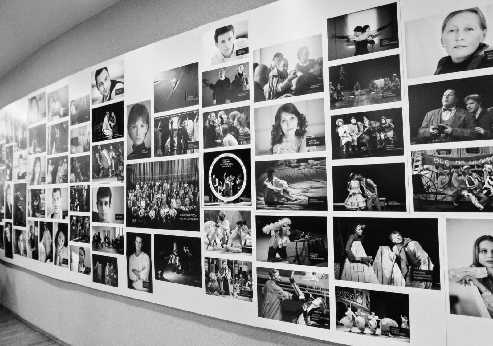
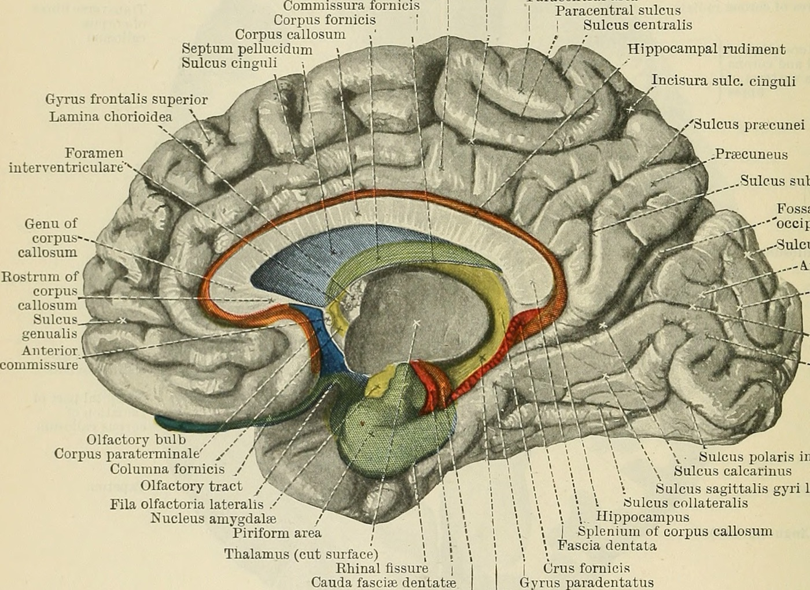

Your amygdala isn't just about fear. Its neurons help predict what you'll remember.
It's Halloween week, and the amygdala is famous as the brain's fear center. A new study recorded single neurons in 42 people and found amygdala cells whose firing helps predict which ordinary pictures will stick, pleasant or unpleasant.

It's Halloween week, which makes it the amygdala's week. The almond-shaped amygdala, one buried deep in each temporal lobe, is widely called the brain's fear center. The label is a simplification, but decades of work do trace threat and fear circuits straight through it. The most striking human evidence comes from a woman known as SM, whose amygdalae on both sides were damaged by a rare disease. A University of Iowa team took her to an exotic pet store with snakes and spiders, walked her through a haunted house one Halloween, and showed her emotionally charged film clips. As their 2011 paper reports, "On no occasion did SM exhibit fear." Even that has a footnote. A 2013 follow-up found that SM and two other patients with the same damage felt real panic when they breathed air heavy with carbon dioxide, so the amygdala isn't needed for every kind of fear.

The amygdala also has a second job description. Scary and exciting moments tend to stick, and a long line of research credits the amygdala with stamping emotional experiences into memory more firmly. That's part of why you can probably still recall the jump scare from a movie you saw years ago.
But most of what you remember isn't scary at all. You remember the face of the barista from this morning, a dog you passed on the walk to class, what you ate for lunch. And most of what you see, you forget. As the new study puts it, "typically only a small and select subset of this experience is transformed into long-lasting episodic memories." So what picks the subset? A study published October 27 in Nature Neuroscience points straight back at the amygdala, and emotion doesn't seem to explain it.
What the team did
The work comes from a team led by first author Jiayang Xiao, with senior author Ueli Rutishauser at Cedars-Sinai Medical Center in Los Angeles, and collaborators at Toronto Western Hospital and Johns Hopkins. Their volunteers were 42 people with epilepsy that drugs couldn't control. Each already had electrodes implanted deep in the brain so their doctors could find where seizures start, and the placement was set entirely by medical need. Tiny wires at the tips of those electrodes can pick up the firing of individual neurons, which is a rare window into the living human brain. Across 49 recording sessions, the team recorded 1,871 single neurons, 575 of them in the amygdala.
The task came in two parts. First, across 140 rounds of a quick memory game, patients saw one or three brand-new photos at a time, each a person, a food, an animal, a car or a landscape, and then said whether a test picture matched one they'd just seen. Ten to thirty minutes later came the real test. They saw 400 pictures, half of them old and half new, and for each one said whether they'd seen it before and how sure they were. On average they got 70.3 percent right, well above the 50 percent you'd get by guessing.
That design let the researchers run a classic comparison. In 1998, two landmark brain-scanning studies showed that activity while people first see a picture or a word can predict whether they will remember it later. Here, the team could ask the same question one neuron at a time.
Cells with a favorite category
Neurons in this part of the brain are picky. Recordings in patients since the late 1990s have found cells that fire for one category of thing, faces or animals for example, and even cells that answer to one particular person. In this study, 40 percent of amygdala neurons qualified as category cells. Each fired most for one of the five categories, and in the amygdala the favorites were most often people, food and animals.
Here's the key result. On average, when category cells saw a new picture from their favorite category, they fired more strongly if that picture would later be remembered than if it would be forgotten. For pictures outside their favorite category, there was no reliable difference. Among cells that preferred animals, for example, firing was stronger on average for the animal pictures patients later recognized.
The signal was fast. The extra firing showed up about 350 milliseconds after a picture appeared, roughly when such cells start telling categories apart, according to earlier studies. In the authors' words, "the selective recruitment of cells for memory encoding is nearly instantaneous with the sensory response." Category cells in the hippocampus, the region best known for memory, showed a similar but weaker effect that didn't start until about 1,300 milliseconds. Cells in the fusiform gyrus, a visual area on the underside of the temporal lobe, responded even more strongly to categories, yet their firing didn't reliably tell later-remembered pictures from forgotten ones.
The firing also tracked how well a picture would be remembered, not just whether. Activity was highest for pictures later recognized with high confidence, lower for low-confidence hits, and lowest for pictures that were forgotten. A model of the patients' recognition answers also linked the firing pattern to recollection, the kind of memory that brings back the specific moment, while its link to a plain sense of familiarity didn't reach significance.
Not just emotion
The obvious objection is that the amygdala was just reacting to the more striking pictures, which also happen to be easier to remember. The team checked. They had a separate group of online volunteers rate every image for how pleasant or unpleasant it felt, and for how arousing. Then they added those ratings to their statistical model. The memory effect held, and in that same model neither rating significantly predicted the cells' firing. The effect also showed up separately for positive and negative pictures, and for pictures rated higher or lower in arousal. In the paper's words, these findings "suggest that the observed differences in firing rate were not due to emotional valence or arousal."
That fits a growing line of work. In 2018, a team at Emory gave 14 epilepsy patients brief, low-level electrical stimulation of the amygdala right after they viewed pictures of neutral objects. The patients felt nothing emotional, yet the next day they remembered the stimulated pictures better. A 2026 study went further, finding that stimulating the amygdala improved memory for objects but not for scenes. The new paper offers a cellular version of the same idea. The amygdala doesn't just turn up memory across the board. Its cells seem to flag specific content at the moment it's taken in.
That leaves an open question. Why were the amygdala's favorites people, food and animals rather than cars or landscapes? Those are the kinds of things that have long mattered for survival, and some researchers have argued that the amygdala is best thought of as a detector of what's relevant to us, not only what's frightening. This study didn't test that idea, but it fits the pattern.
Checked twice
One dataset can mislead, so the team checked a second, separately collected one, with a simpler seen-it-or-not test of 100 pictures, 95 participants and 131 recording sessions. Amygdala category cells again fired more for pictures that would later be remembered, and the effect again survived controls for emotion. The hippocampus didn't show the effect this time. Pooling both datasets, the effect was clear in both hemispheres but stronger in the right amygdala. The authors note that this left-right difference still needs to be replicated, and suggest it may be because the memories here were visual. Damage to the left medial temporal lobe, which includes the amygdala, tends to hurt memory for words, and damage on the right tends to hurt memory for pictures.
They also found a hint of how the cells might do it. When a picture was going to be remembered, amygdala category cells fired more in step with slow rhythms in the hippocampus, at about 8 to 18 cycles per second, and hippocampal category cells fired more in step with rhythms of about 6 to 9 cycles per second in the amygdala. The authors suggest this kind of coordination may help bind a memory together, though the study didn't measure that directly.
Where to keep your guard up
The emotion ratings came from other people, so they can't rule out a patient's own reaction to a particular picture, or how much attention it grabbed. Everyone in this study had drug-resistant epilepsy, and the electrodes went wherever their care required, so these brains and recording sites aren't a random sample. The memory test was a lab task with photos and a delay of 10 to 30 minutes, not memories of real life tested days or years later. The study is also correlational. The cells predict which pictures will be remembered, but nobody turned them off or on to prove they cause it. The authors note that the number of forgotten pictures per neuron was limited, which constrains some of the more detailed analyses.
None of this means emotion doesn't matter for memory. Emotional events really are remembered better, and the amygdala is part of why. What this study shows is that the amygdala does more than that. The authors float the right amygdala's category cells as a possible target for future treatments of memory problems, in conditions such as Alzheimer's disease or temporal lobe epilepsy. That's a direction for research, not something tested here.
The brain's so-called fear center may also work as something closer to a curator.
The bottom line
The amygdala earned its place in the Halloween story. Without it, as SM showed, a haunted house can be exciting without being scary. But this study shows it doing something quieter and more constant. About 350 milliseconds after a new picture appeared, activity in certain amygdala neurons already differed, on average, depending on whether the patient would later recognize it, no scare required. As the authors put it, "the amygdala plays a broader role in memory formation extending much beyond its traditional role in processing emotional salience."